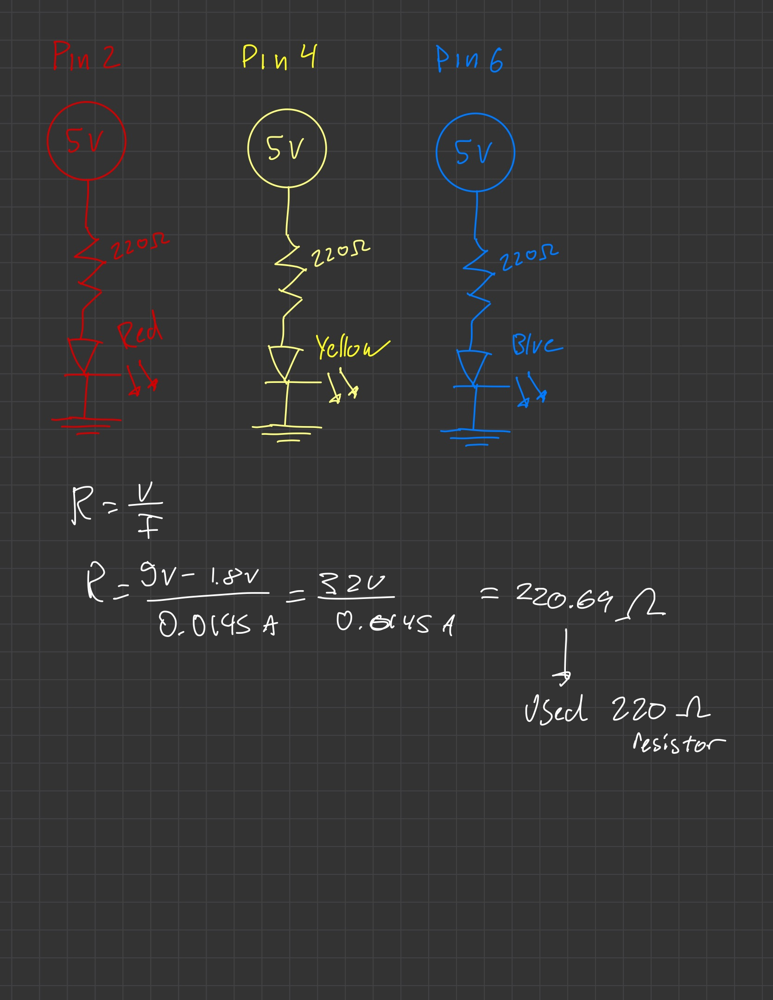

Overview
This assignment introduces basic Arduino programming and circuit design by creating a simple LED blinking system. It demonstrates how to connect multiple LEDs, write and upload firmware using the Arduino IDE, and visualize timing behavior through graphs and media documentation.
Schematic (with Resistor Calculation)

This schematic shows the LED circuit connections and resistor calculation. Each LED uses a 220Ω resistor, derived from (5V - 1.8V) / 0.015A = 220Ω, to safely limit current through the Arduino pins.
Breadboard Circuit
This photo shows my breadboard setup with the three LEDs connected to pins 2, 4, and 6 through resistors, matching the schematic and Arduino code sequence.
Firmware Code
/*
Blink
Turns an LED on for one second, then off for one second, repeatedly.
Most Arduinos have an on-board LED you can control. On the UNO, MEGA and ZERO
it is attached to digital pin 13; on the MKR1000, it is on pin 6. LED_BUILTIN
is set to the correct LED pin independent of which board is used.
If you want to know what pin the on-board LED is connected to on your Arduino
model, check the Technical Specs of your board at:
https://docs.arduino.cc/hardware/
modified 8 May 2014 by Scott Fitzgerald
modified 2 Sep 2016 by Arturo Guadalupi
modified 8 Sep 2016 by Colby Newman
This example code is in the public domain.
https://docs.arduino.cc/built-in-examples/basics/Blink/
Note: This version references the Arduino IDE’s built-in “Blink” example as a base,
adapted for three LEDs connected to pins 2, 4, and 6.
*/
// the setup function runs once when you press reset or power the board
void setup() {
pinMode(2, OUTPUT); // Set digital pin 2 as output for RED LED
pinMode(4, OUTPUT); // Set digital pin 4 as output for YELLOW LED
pinMode(6, OUTPUT); // Set digital pin 6 as output for BLUE LED
}
// the loop function runs repeatedly forever
void loop() {
digitalWrite(2, HIGH); // Turn the RED LED on
delay(1000); // Wait 1 second
digitalWrite(2, LOW); // Turn the RED LED off
delay(1000); // Wait 1 second
digitalWrite(4, HIGH); // Turn the YELLOW LED on
delay(1000); // Wait 1 second
digitalWrite(4, LOW); // Turn the YELLOW LED off
delay(1000); // Wait 1 second
digitalWrite(6, HIGH); // Turn the BLUE LED on
delay(1000); // Wait 1 second
digitalWrite(6, LOW); // Turn the BLUE LED off
delay(1000); // Wait 1 second
}
Operation GIF

This GIF shows the LED blinking sequence from my Arduino code, where each LED turns on and off in order, matching the timing and delay setup in the graph and sketch.
Questions & Answers
- Draw a graph where the X axis is time and the Y axis is voltage across the LEDs. Draw a line for each of your 3 LEDs.
- How many LEDs could you blink independently with your Arduino? How much current would that draw?
- How fast do you need to blink your LEDs until you no longer can tell that they are blinking?
- Did you use AI tools in completing this assignment? If yes, please provide details on how/when, as well as a brief reflection. If no, you can either leave this question blank, or provide other information if you'd like.
This graph shows the voltage across each LED over time. Each line represents one of the LEDs (red, yellow, and blue) turning on and off sequentially, matching the timing and delay patterns from my Arduino code.
There are 14 digital pins and 6 analog pins meaning there are 20 outputs. We use pins D0 and D1 for uploading code and serial monitoring so those will not be used for LEDs. This means that we have 18 practical pins for blinking LEDs independently.
V = I x R
5V - 1.8V drop = 3.2V
3.2/220 = 14.5 mA per LED x 18 LEDs
= 261 mA of current drawn from the blinking LEDs
7ms is the fasting you can tell the LED's are blinking. When I tested 6ms, the LEDs just appeared as if they were on with a steady current
I utilized an AI tool that assists the formatting and debugging of my HTML/CSS styling as well as for the data visualization based off my Arduino code.